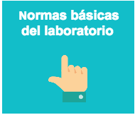
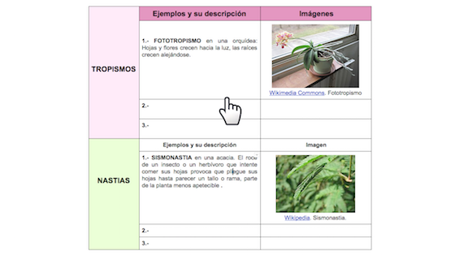

Nutricion y relación con el entorno
Actividad 1. Experimento de Van Helmont
En 1624, un científico llamado Van Helmont quería averiguar qué utilizaban las plantas para crecer. Para ello ideó el siguiente experimento:
- Tomó un pequeño sauce y lo pesó.
- Tomó una cierta cantidad de tierra y la pesó.
- Puso el árbol en la tierra y lo tapó para que nada le cayera, excepto el agua que le agregaría.
- Lo regó periódicamente.
- 5 años después extrajo el árbol cuidadosamente y pesó la maceta.
Al cabo de cinco años el sauce pesaba 75 kg más que al principio y la tierra había perdido solo medio kilogramo. Por eso pensó que el sauce usaba solamente el agua para crecer. Este es el primer experimento bioquímico cuantitativo que conocemos, y por ello es de gran importancia en la historia de la ciencia.
a) ¿Dirías que su conclusión es correcta? ¿Por qué? ¿Cómo lo explicarías?
b) ¿Te parece significativa la disminución del peso de la tierra? ¿Debería considerarse en las conclusiones de la experiencia?
c) ¿Cuál es la importancia del experimento de Van Helmont?
Ahora en equipo. Las plantas: el laboratorio de la vida
Actividad 2
La NUTRICIÓN es la función vital por la cual las plantas obtienen alimento y energía.
Las plantas fabrican su propio alimento, no necesitan alimentarse de otros seres vivos y por eso decimos que tienen nutrición AUTÓTROFA.
Nos informamos
La nutrición en las plantas consta de dos procesos sobre los que vamos a informarnos.
- La fotosíntesis
-
Mediante este proceso, que tiene lugar en las partes verdes de la planta (cloroplastos), fabrican su propio alimento. Para realizar la fotosíntesis la planta necesita:
-
Agua y sales minerales disueltas, que toman principalmente del suelo por la raíz a través de los pelos absorbentes (excepto los musgos, que lo hacen a través de todo el cuerpo). La mezcla del agua con las sales minerales es la SAVIA BRUTA que asciende por la raíz y el tallo hasta las hojas, a través de unos tubos muy finos llamados vasos leñosos.
-
Dióxido de carbono (CO2), que obtienen del aire a través de unas estructuras presentes en las hojas llamadas estomas. Estos son orificios muy pequeños que se abren y cierran en función de las necesidades de la planta.
-
Energía, obtenida directamente de la luz del sol, es imprescindible para producir su propio alimento. La luz es captada gracias a varias sustancias coloreadas presentes en los cloroplastos. La principal es la clorofila, un pigmento verde que da ese color a las hojas.
Durante la fotosintesis la planta produce:
-
Oxígeno (O2), el cual es librado a la atmósfera a través de los estomas y es utilizado por los demás seres vivos para respirar.
-
La savia bruta se transforma en una mezcla de agua y alimentos llamada savia elaborada que llegan al resto de la planta a través de los vasos liberianos que son diferentes de los leñosos, de modo que la savia bruta y la savia elaborada no se mezclan. La savia elaborada está formada por las sustancias orgánicas que la planta precisa para llevar a cabo las funciones vitales.
- Para comprender mejor el proceso visualizamos el vídeo Cómo se desarrolla la fotosíntesis y la siguiente imagen.
-
- La respiración
-
Las plantas toman oxígeno del aire y lo combinan con los alimentos para producir energía. En este proceso, que tiene lugar en las mitocondrias, se produce dióxido de carbono, que también se expulsa a través de los estomas. Por tanto, en la fotosíntesis las plantas toman dióxido de carbono y expulsan oxígeno, mientras que en la respiración ocurre al contrario: toman oxígeno y expulsan dióxido de carbono.
Glucosa + Oxígeno → Agua + Dióxido de Carbono + Energía química
-
Por el día las plantas respiran y además realizan la fotosíntesis.
-
Por la noche las plantas únicamente respiran, ya que no disponen de la luz necesaria para realizar la fotosíntesis.
-
Una planta libera a la atmósfera más oxígeno por la fotosíntesis del que se consume con la respiración aerobia.
-
La energía química obtenida la utilizan las plantas para muchos procesos entre ellos: absorción de sales minerales, cierre y abertura de los estomas, renovación de las hojas, formación de los frutos y el transporte de nutrientes.
- Para comprender mejor el proceso visualizamos el vídeo Respiración de las plantas y la siguiente imagen.
- La respiración (GNU/GPL) -

Lo explicamos
Vamos a realizar un póster en el que ilustraremos la relación y las diferencias entre la respiración y la fotosíntesis.
Nuestros pósteres tendrán la siguiente estructura:
- Titular o eslogan: es una frase breve e impactante que contiene el mensaje fundamental para llamar la atención del receptor, por eso tenemos que resaltarlo de todo lo demás. Podemos usar otro tipo de letra, un tamaño más grande u otros colores.
- Texto: aporta la información principal y completa el mensaje transmitido en el eslogan.
- Imágenes: complementan al texto y ayudan a transmitir el mensaje que se desea. Podemos usar una grande o una serie de imágenes pequeñas, pero siempre tendrán que apreciarse claramente.
- Fuentes de las que hemos obtenido la información.
- Créditos: nombre del equipo, de sus autores y curso.
El póster lo podemos hacer digital o manualmente:
Digitalmente: haciendo uso de la herramienta online Genially o bien en un documento de Google Drive.- Haremos uso de
 la plantilla para diseñar el boceto del póster.
la plantilla para diseñar el boceto del póster. - En esta presentación nos explican cómo usar Genially.
Ver tutorial a pantalla completa Cómo hacer una póster en Genially
Cómo hacer una póster en Genially
Cuando esté terminado, obtendremos su URL y se la enviaremos al profesor por correo electrónico. Asimismo lo archivaremos en formato PDF en nuestro portafolio de equipo de Google Drive y lo compartiremos con el profesor.
Manualmente con cartulina y rotuladores.
El póster combina imágenes y texto con la intención de transmitir un mensaje e influir en el receptor. Su forma, el material, los colores, el tipo de letra y la distribución de los elementos son muy importantes porque facilitan la lectura y ayudan a comprender el mensaje.
Una vez que hayamos finalizado, exponemos nuestro trabajo al resto de los equipos y los pósteres serán evaluados con el  "Cuestionario de coevaluación del póster".
"Cuestionario de coevaluación del póster".
Investigamos: La circulación del agua en las plantas
Las plantas absorben agua y otras sustancias del suelo a través de la raíz.
La savia bruta está formada por el agua y las sales minerales que las plantas toman del suelo. Para que la planta pueda fabricar su propio alimento mediante la fotosíntesis, la savia bruta debe ascender por CAPILARIDAD por unos unos vasos conductores hasta las hojas en contra de la gravedad.
La capilaridad es un fenómeno físico que permite a un líquido ascender por un tubito muy fino hasta una cierta altura. Cuando el líquido sube por el tubito es debido a que las fuerzas de adhesión de las moléculas del líquido con las paredes del tubito son superiores a las fuerzas intermoleculares de cohesión del líquido. La altura que puede lograr el líquido en un capilar está limitada por el propio peso del líquido.
La capilaridad no es el único mecanismo responsable del transporte de agua en las plantas. La transpiración vegetal en la superficie de las hojas ayuda a desplazar el agua y otras sustancias por las plantas.
- Vamos a observar y medir el movimiento de agua en las plantas de un modo muy sencillo en hojas de APIO.
- Para ello seguiremos las instrucciones del guion incluido en la plantilla "Circulación del agua en las plantas" que también nos servirá para realizar el informe de la práctica. Tendremos en cuenta las normas del laboratorio.
 - Seremos evaluados mediante
 la rúbrica de experimento en equipo. En el magnífico canal de YouTube Fq-experimentos nos ilustran cómo hacerlo en este vídeo.
la rúbrica de experimento en equipo. En el magnífico canal de YouTube Fq-experimentos nos ilustran cómo hacerlo en este vídeo.
{kind=link}
¿Se mueven las plantas?
Actividad 3
Las plantas, como todo ser vivo, son capaces de recibir información del medio y detectar cambios en él. Aunque carecen de órganos sensoriales y sistema nervioso, son capaces de captar estímulos y reaccionar ante ellos, elaborando respuestas. Como no tienen capacidad para desplazarse, las respuestas de las plantas son más lentas y, a veces, menos perceptibles que las de los animales.
Observamos las imágenes y respondemos
Cuestión 1
¿Sabes por qué se llama girasol a la planta de la imagen?
Cuestión 2
¿Qué sucede cuando un insecto se posa sobre una planta carnivora?Cuestión 3
¿Qué hace esta planta de judía verde para crecer hacia arriba?
Cuestión 4
Las plantas que viven en sitios húmedos y con poco sol tienen raíces poco profundas. Las que viven en sitios de mucho calor tienen raíces muy profundas. ¿Por qué?
Nos informamos de los tropismos y nastias
Las plantas son capaces de reaccionar con un MOVIMIENTO a estímulos como el contacto, la luz, la gravedad o la humedad. Estas formas de relación con el medio, que implican un movimiento, se llaman NASTIAS y TROPISMOS. Visualicemos el siguiente vídeo.
Canal en Youtube de Xacobo de Toro . Tropismos e Nastias.
¿Lo hemos comprendido?
Respondemos a las siguientes cuestiones en nuestro cuaderno de clase o en Google Drive utilizando la plantilla  "Tropismos y nastias".
"Tropismos y nastias".
1. ¿Cúal es la diferencia entre nastias y tropismos?

2. Completamos la plantilla buscando información en Internet. Nos será de utilidad el tutorial  "Recomendaciones de búsquedas en Internet".
"Recomendaciones de búsquedas en Internet".
3. Para buscar las imágenes que hemos de incluir en la tabla de la plantilla, seguiremos las recomendaciones del tutorial  "Búsqueda de imágenes con licencia CC".
"Búsqueda de imágenes con licencia CC".
Investigamos el fototropismo con lentejas
Vamos a investigar experimentalmente la función de relación en las plantas, viendo cómo reaccionan ante la luz. Como en toda investigación seguiremos el método científico. Llevaremos a cabo las siguientes tareas:
a) Visualizamos el vídeo de ciencia animada de la Universidad de Barcelona para entender qué pasos del método científico hemos de seguir.
b) Observamos el fenómeno del fototropismo en judías pintas en este video cuyo lapso de tiempo es 5 min/24 horas.
Phototropism. Licencia CC en Youtube
c) Investigamos el fenómeno con lentejas.
1. PLANTEAMIENTO DEL PROBLEMA: ¿cómo crece la planta ante un estímulo luminoso?
2. Establecemos una HIPÓTESIS: las hojas y los tallos se dirigen hacia la luz.
3. Experimentamos y analizamos los resultados: para ello realizamos un experimento con lentejas.
4. ¿Hipótesis comprobada? Si es correcta, escribimos nuestra conclusión que será nuestra teoría. Si no lo es hay que comenzar de nuevo, buscar otra posible solución; esto es, replantear nuestra hipótesis y realizar nuevos experimentos.
5. Escribimos el informe de la investigación: debe tener los siguientes apartados que se indican en la plantilla  "Fototropismo en lentejas" (incluye guion del experimento).
"Fototropismo en lentejas" (incluye guion del experimento).
Nuestro trabajo será evaluado con  la rúbrica de experimento en equipo.
la rúbrica de experimento en equipo.
Ahora tú. Comprendemos lo que leemos: el maíz.
Actividad 4
Vamos a responder al cuestionario "El maíz" que nos pone a prueba con siete interesantes cuestiones. Para ello seguiremos estos pasos:
Instrucciones
- Pulsamos en el botón de AYUDA y leemos atentamente las instrucciones.
- Leemos los enunciados y nos aseguramos de que los entendemos antes de contestar.
El maíz. Objeto Digital de la RED Descartes basada en las unidades liberadas de PISA
Evaluación
Una vez que hemos respondido a las siete cuestiones, pulsamos en "Continuar" y podemos optar por:
- Ver directemente las respuestas corregidas.
- Descargar las respuestas en un archivo.
- Enviar las respuestas a nuestro profesor con por correo electrónico.
- Imprimir las respuestas.
- Las tres últimas opciones también dan acceso a visualizar las respuestas corregidas.
Enviaremos las respuestas a nuestro profesor o profesora por correo electrónico y las descargaremos en un archivo que guardaremos en nuestro portafolio individual.
Hemos terminado esta sección y es el momento de ir añadiendo las palabras nuevas al GLOSARIO.
Diario de aprendizaje
- En el Diario de aprendizaje de nuestro portafolio individual haremos una nueva entrada que tendrá por título "Nutrición y relación con el entorno".
- La escribiremos en nuestro cuaderno de clase o en un documento de Google Drive, utilizando la plantilla "Cuestionario de autoevaluación".
- Será evaluado a lo largo del proceso y al finalizar, para lo cual el profesor o profesora utilizará la rúbrica del Diario.
En el siguiente botón tenemos algunas orientaciones para ello.
Obra publicada con Licencia Creative Commons Reconocimiento Compartir igual 4.0